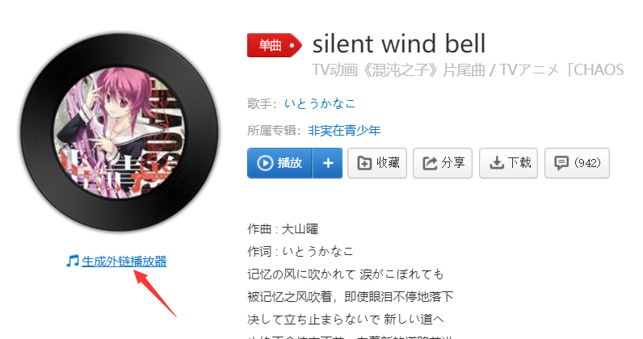
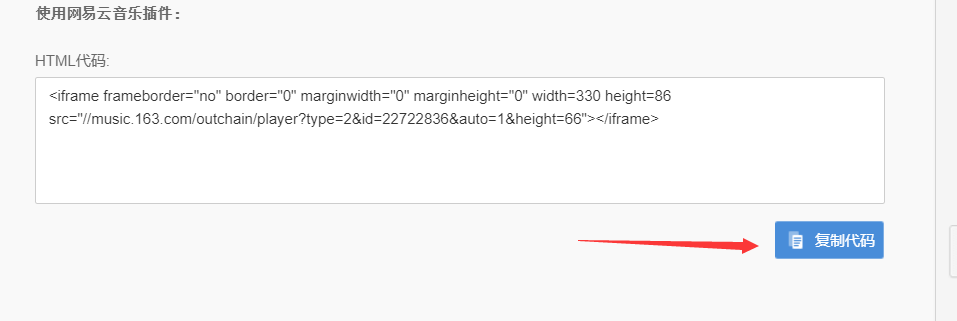
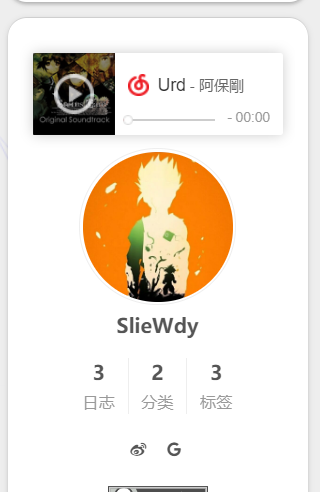
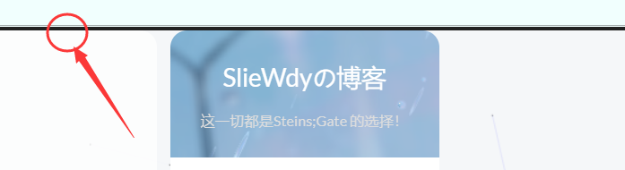

Hexo-NexT主题美化和配置|进阶
本文章发布时间久远，有些内容不再具有参考性，望周知
对博客内容设置访问密码
命令行窗口，使用：
1 | cnpm install hexo-blog-encrypt --save |
当然，npm也行。
之后去 站点配置文件中启用该插件：
1 | encrypt: |
于是就可以在文章头部添加字段：
1 | --- |
- password: 是该博客加密使用的密码
- abstract: 是该博客的摘要，会显示在博客的列表页
- message: 这个是博客查看时，密码输入框上面的描述性文字
当然，如果不想每次写文章时都手动输入相应描述，可以直接在 站点配置文件里添加选项：
1 | encrypt: |
已知BUG：
- 代码块复制失效，且较长代码显示变得诡异（只针对被加密的文章，其他文章正常）
- next主题自带的目录列表不再被显示
修复打赏功能文字闪烁
修改
next/source/css/_common/components/post/post-reward.styl，取消对wechat:hover和alipay:hover的注释：/* */
1 | /* 注释文字闪动函数 |
添加本地搜索功能
cnpm install hexo-generator-searchdb --save下载插件
站点配置文件：
1 | search: |
主题配置文件：
搜索找到并开启：
1 | # Local search |
页面圆角化
打开\themes\next\source\css\_variables\你选择的主题风格.styl ，
末尾添加布局：
1 | $border-radius-inner = 15px 15px 15px 15px; |
区块美化
页脚美化
隐藏底部powered By Hexo字样
进入 主题配置文件 搜索查找powered，修改为false即可
超链接样式美化
修改文件 themes\next\source\css\_common\components\post\post.styl，在末尾添加如下css样式
1 | // 文章内链接文本样式 |
添加分享按钮
侧边栏美化
加入网易云音乐模块
进入网易云音乐官网，选择想要的音乐后，点击[生成外链播放器]：

点击[复制代码]：

之后选择需要的位置进行粘贴，如侧边栏sidebar
进入/themes/next/layout/_macro/sidebar.swig复制
效果如图：

代码块美化
在next的 主题配置文件里搜索找到：
1 | codeblock: |
并更改
顶部美化
添加顶部加载条
进入 主题配置文件，搜索关键字：pace，进行相关设置
1 | pace: |
顶栏背景图修改
此处以next默认的Pisces主题为例，
找到\themes\next\source\css\_schemes\Pisces\_header.styl文件，
将background设置为：
1 | { |
添加访问量统计
在 主题配置文件中搜索busuanzi更改设置：
1 | # Show Views / Visitors of the website / page with busuanzi. |
首页美化
设置背景图片
由于NexT最新版本取消了一些文件，所以网上找到的，诸如需要
/next/source/css/_custom/custom.styl的教程都失效了，解决方法是：在
根目录/source/_data中新建一个文件styles.styl，将需要设置的代码都复制进去并在 主题配置文件中找到设置并开启（即 取消注释）：
2
3
4
5
6
7
8
9
10
11
#head: source/_data/head.swig
#header: source/_data/header.swig
#sidebar: source/_data/sidebar.swig
#postMeta: source/_data/post-meta.swig
#postBodyEnd: source/_data/post-body-end.swig
footer: source/_data/footer.swig
#bodyEnd: source/_data/body-end.swig
#variable: source/_data/variables.styl
#mixin: source/_data/mixins.styl
style: source/_data/styles.styl（取消关于style的最后一行）
将如下代码复制到styles.styl中，把所需背景图片放入source/images中即可
1 | body { |
去除顶端黑线

解决方法：
进入next/layout/_layout.swig将<div class="headband"></div>注释掉
自定义博客图标
自行寻找ico/png格式的32*32图标，命名favicon.ico，放在/themes/next/source/images中
搜索favicon修改 主题配置文件：
1 | favicon: |
显示当前浏览进度
主题配置文件搜索找到b2t：
1 | back2top: |
添加页面小宠物
终端:
1 | cnpm install hexo-helper-live2d --save |
站点配置文件：
1 | live2d: |
具体请参阅官方中文文档
参考资料
https://www.jianshu.com/p/d350dec39078
https://www.jianshu.com/p/3e9d614c1e77
https://www.cnblogs.com/kingning/p/11078782.html
https://baijiahao.baidu.com/s?id=1655730405416444778&wfr=spider&for=pc